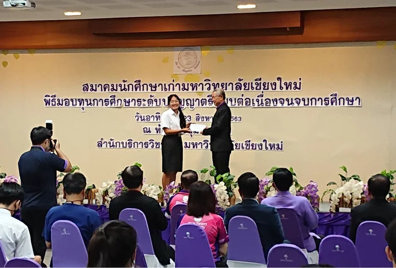
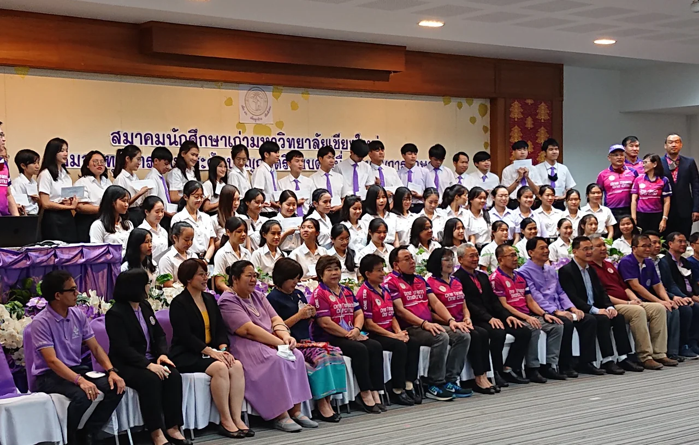
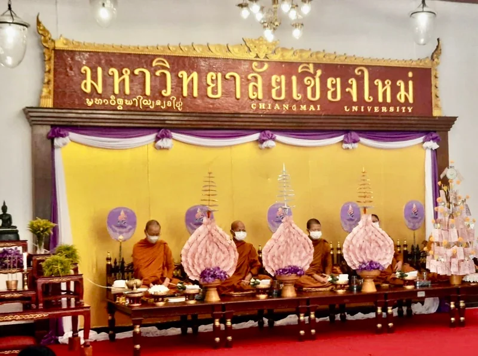
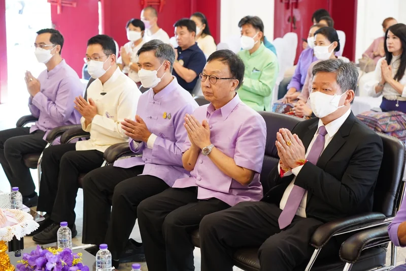
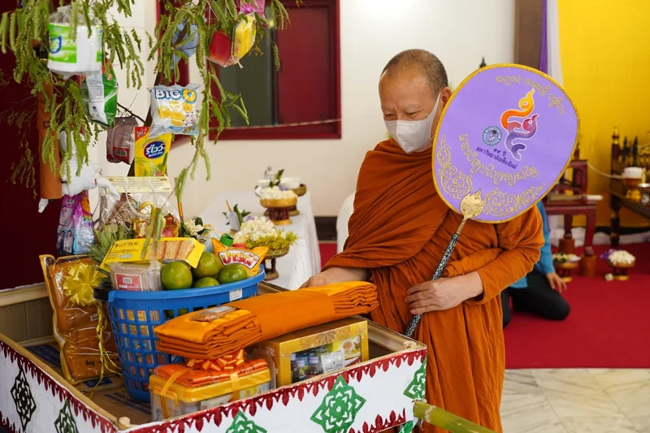

CMU ALUMNI ผ้าป่า ๒๕๖๙
ผ้าป่าการกุศล
เพื่อทุนการศึกษา
ให้ความผูกพันของเรา
เป็นโอกาสในการเรียนต่อของลูกช้าง
16 ตุลาคม 2569 09:30 น.
ศาลาธรรม มหาวิทยาลัยเชียงใหม่
สมาคมนักศึกษาเก่ามหาวิทยาลัยเชียงใหม่
ขอเรียนเชิญทุกท่านร่วมส่งต่อโอกาสทางการศึกษา

ศุกร์ 16 ตุลาคม 2569
09:30 น.
ศาลาธรรม มหาวิทยาลัยเชียงใหม่
ร่วมบุญวันนี้
ให้โอกาสได้เติบโต
เพื่อ มช. เพื่อลูกช้าง เพื่อสังคม
เพราะเส้นทางการศึกษาไม่ควรหยุดลง
เพียงเพราะขาดโอกาส
สมาคมนักศึกษาเก่ามหาวิทยาลัยเชียงใหม่ จัดทอดผ้าป่าการกุศล เพื่อนำเงินมาเป็นทุนการศึกษาแบบต่อเนื่องจนจบหลักสูตรให้กับนักศึกษามหาวิทยาลัยเชียงใหม่
จนจบหลักสูตร

มาร่วมบุญ
ด้วยกันที่ มช.
ขอเรียนเชิญนักศึกษาเก่าและผู้มีจิตศรัทธา
ร่วมเป็นเจ้าภาพทอดผ้าป่าการกุศลเพื่อทุนการศึกษา
- 09:30 น.
- พิธีทอดถวายผ้าป่าการกุศล
เพื่อทุนการศึกษาสำหรับนักศึกษา มช. - สถานที่
- ศาลาธรรม
มหาวิทยาลัยเชียงใหม่ จังหวัดเชียงใหม่
ทุกน้ำใจ
ร่วมบุญได้
เลือกช่องทางที่สะดวกสำหรับคุณ
เพื่อร่วมเป็นส่วนหนึ่งของทุนการศึกษา
ธนาคารไทยพาณิชย์
ชื่อบัญชี สมาคมนักศึกษาเก่า มช.
เลขที่บัญชี
667-2-21816-6
สำหรับบุคคลธรรมดาและนิติบุคคล
หลังโอนร่วมบุญ
แจ้งหลักฐาน
เพื่อรับใบเสร็จ
- 01เก็บหลักฐานการโอน
บันทึกสลิปจากแอปธนาคารของคุณ
- 02เตรียมข้อมูลสำหรับใบเสร็จ
ชื่อ-สกุล ที่อยู่ เบอร์โทรศัพท์ และเลขบัตรประชาชนหรือเลขประจำตัวผู้เสียภาษี
- 03ส่งให้สมาคมฯ ทางอีเมลหรือ LINE
ช่องทางโอนเข้าบัญชีนี้แยกจากระบบ e-Donation

เฉพาะบุคคลธรรมดา
สแกนร่วมบุญ
ผ่าน Mobile Banking
- 01ใช้แอปธนาคารของผู้บริจาค
สแกน QR หรือเลือกภาพ QR ที่บันทึกไว้ในแอปธนาคาร
- 02ตรวจสอบชื่อผู้รับและกรอกข้อมูล
ผู้รับ: มหาวิทยาลัยเชียงใหม่ (เงินบริจาค)
Biller ID: 099400042317992
กรอกข้อมูลผู้บริจาคและจำนวนเงิน - 03ตรวจสอบก่อนยืนยันในแอปธนาคาร
ชื่อผู้บริจาคต้องเป็นชื่อเดียวกับเจ้าของบัญชีธนาคาร
ตามข้อมูลประชาสัมพันธ์ของสมาคมฯ การร่วมบุญผ่าน e-Donation จะส่งข้อมูลเข้าสู่ระบบภาษีอัตโนมัติ และไม่มีการจัดส่งใบเสร็จให้ผู้บริจาค
ช่องทางร่วมบุญออนไลน์ของ มช.ต้องการสอบถามเรื่องการร่วมบุญหรือใบเสร็จ?
โทร 088-2679580น้ำใจที่ส่งต่อ
ความผูกพันที่ยังอยู่
ภาพกิจกรรมร่วมบุญและมอบทุนที่ผ่านมา
ของสมาคมนักศึกษาเก่ามหาวิทยาลัยเชียงใหม่






เพราะการให้
พาเรากลับมาใกล้กัน
สมาคมนักศึกษาเก่า
มหาวิทยาลัยเชียงใหม่
สอบถามการร่วมเป็นเจ้าภาพ
การร่วมบุญ และการรับใบเสร็จ